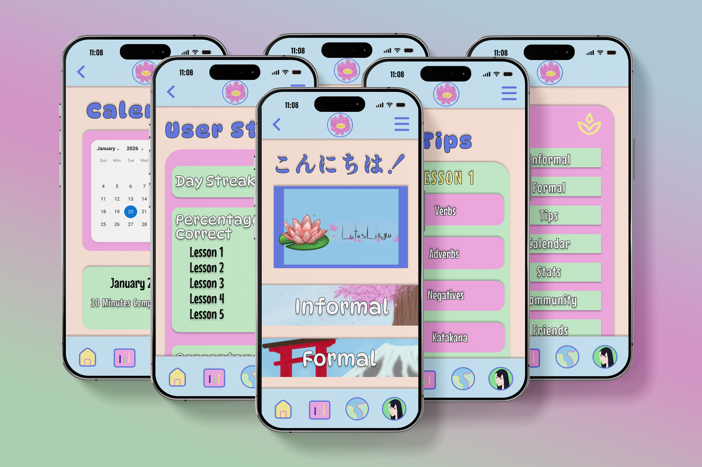
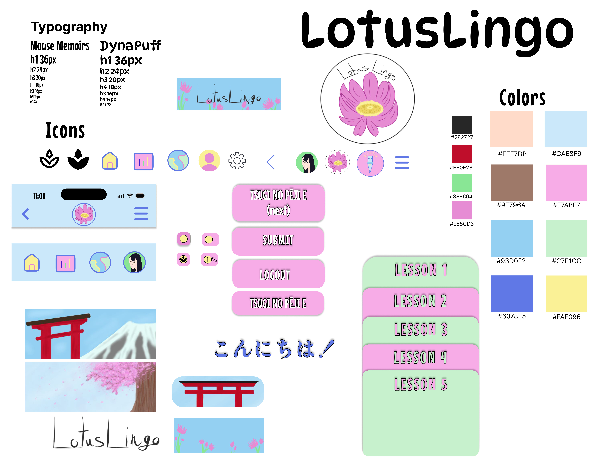
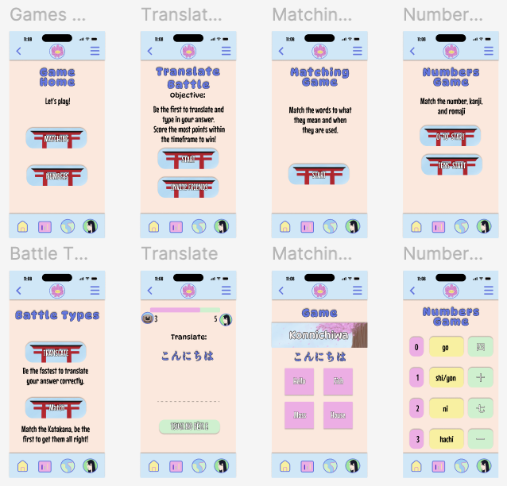
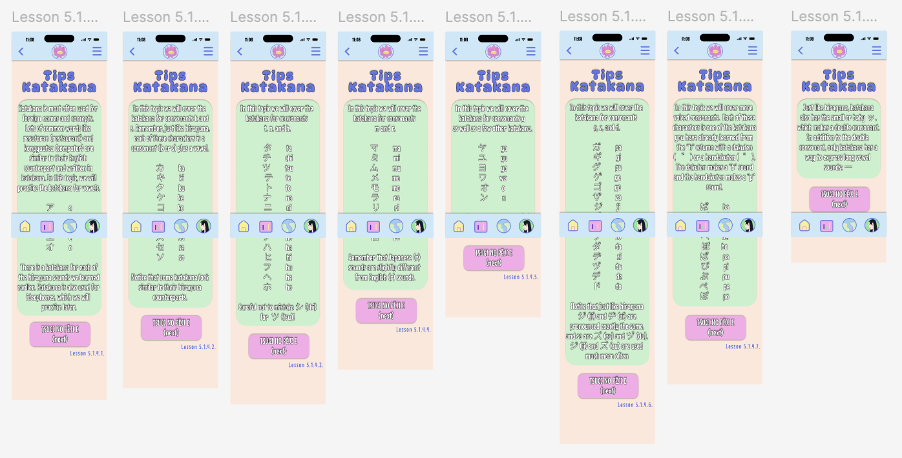

THE CHALLENGE
Make language learning engaging and sustainable.
Learners need more than vocabulary drills. The experience should accommodate different learning styles, encourage consistent practice, and make progress feel rewarding.
Figma
Adobe Illustrator
Adobe Photoshop
Product Designer
UI/UX Designer
Mobile App Designer
Independent Academic Project
App Concept & Identity
Information Architecture
Wireframes & Hi-Fi Designs
Interactive User Flows
High-Fidelity Prototype
Teuida: reference imagery for educational purposes
Envato Elements: licensed assets and mockups
A CONCEPTUAL LANGUAGE-LEARNING APP
Lotus Lingo is a conceptual mobile language-learning app designed to make learning Japanese more engaging through structured lessons, interactive games, and community features.
The project explored the experience from onboarding and daily practice to progress tracking, rewards, and personalized learning. More than 100 designed screens demonstrate how a cohesive visual system can support a complete mobile product.

Lotus Lingo / Mobile app mockup
THE DESIGN OPPORTUNITY
Make language learning engaging and sustainable.
Learners need more than vocabulary drills. The experience should accommodate different learning styles, encourage consistent practice, and make progress feel rewarding.
Design a flexible, interactive learning experience.
Lotus Lingo combines structured lessons with games, progress tracking, cultural content, and community features in a unified mobile interface.
TRY THE EXPERIENCE
Explore the Lotus Lingo prototype to experience the app's navigation, lessons, games, and interactive features.

Visual identity / Design system
COLOR, TYPE & COMPONENTS
The visual identity pairs playful illustration with a bright palette of light green, deep pink, light blue, and soft peach. Consistent interface components, navigation, and visual feedback create a welcoming experience across the app.
The design system supports a broad range of features, from reading, writing, and pronunciation exercises to games, rewards, community interaction, and progress tracking. Featured Katakana lessons demonstrate how structured explanations, character recognition, and writing practice can work together within a cohesive interface.
RESEARCH & INFORMATION ARCHITECTURE
Research into existing language-learning apps highlighted opportunities to expand beyond repetitive vocabulary practice. Preparing for a trip to Japan also prompted a closer look at the challenges of learning Japanese, including its multiple writing systems and different learning needs.
These insights informed an experience built around flexible learning paths, structured progression, and varied forms of engagement. I developed a high-fidelity Figma prototype with more than 100 screens spanning lessons, games, music, community features, and account management.
Although the larger RPG-style learning game remained a future concept, the final prototype established a framework for an expanded, interactive learning experience.

App concept map / Information architecture
LEARN, PRACTICE & PLAY
From guided language lessons to interactive challenges, the interface brings multiple learning methods together in one connected mobile experience.


A COHESIVE VISUAL IDENTITY
The Lotus Lingo identity extends beyond individual screens to create a recognizable visual experience across the app.
Let's translate your ideas into a design that speaks.
CONTACT ME